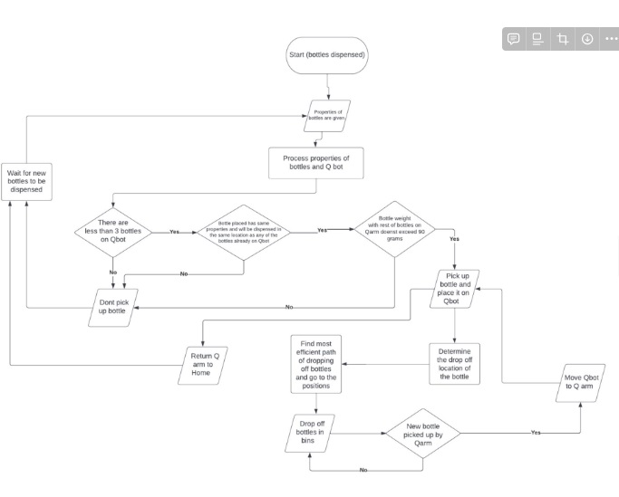
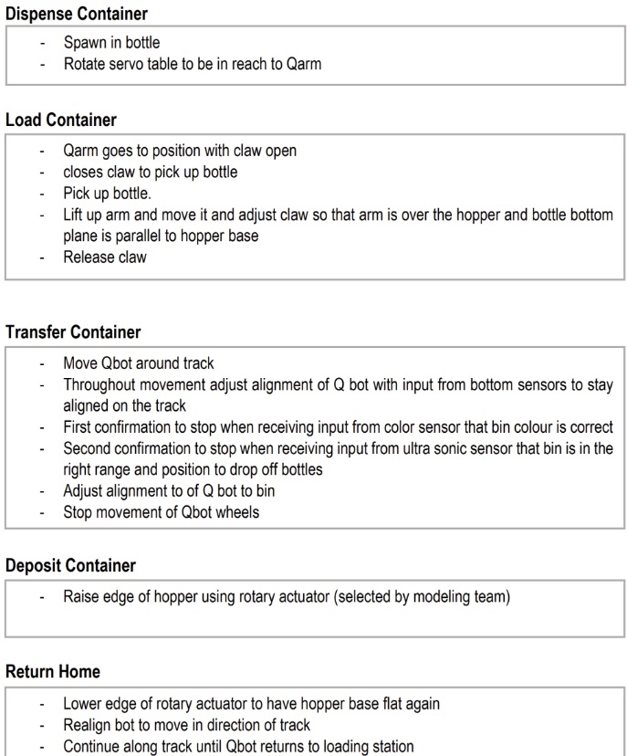
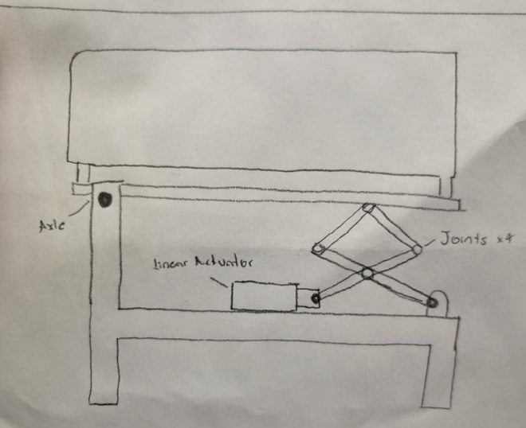

Revenge of the Recycling System
Project Overview
Introduction:
- Title: Revenge of the Recycling System
- Duration: January 2023 - February 2023
- Role: Project Administrator
- Technologies Used: Autodesk Inventor (CAD software)
Summary:
For this project, a team of 4 was split into two sub-teams, modelling and computing. As part of the computing team, I was responsible, along with a teammate, to code a program in python to dispose containers into a recycling bin based on properties of the containers that we were given. The containers were first loaded onto a hopper with a Q-arm, then they were transported and sorted into their respective containers by a Q-bot. Meanwhile, the modelling sub-team was responsible for designing the hopper to be able to dump the container using gears and a linear or rotary actuator.
The Process:
The project required the computing sub-team to program a Q-arm to pick up a container, load it onto a hopper and transport it to its intended bin. The bin was decided based on properties of the container given to us, including weight, material, and quantity. Using sensors, the Q-bot would follow a yellow line and identify bins to decide where it would dump each container. There was also a physical component where a Q-bot would follow a line and dump the container once it detects a bin.
The Outcome:
- Gather properties of containers randomly dispensed on the servo
- Pick up the container with the Q-arm and load it onto the hopper
- Q-bot follows line until it has reached the intended bin
- Dump the containers into the intended bin
- Q-bot follows the yellow line back to its starting position
- Repeat
The team was also presented with the challenge of determining which sensors to equip the Q-bot with in order to effectively complete the tasks assigned. Our team decided to use color sensors as they were easily identifiable and simple to code into the program. We also used an ultrasonic sensor to determine the distance from the bin to the Q-bot, in order to effectively dump the containers in without missing the bin completely.
Project Reflection
I was assigned the role of project administrator for this project. I was tasked with gathering all of the teams worksheets and submitting them on time, in the right format, to the right place, as well as coordinating a final Gantt chart to encompass the teams scheduled meeting and work sessions on one document. This was a challenging task that required a lot of organizational skills to keep up with all the deadlines and all of the moving parts of such a complex project like this one. It taught me that I have to keep organized and keep track of all my duties and responsibilities for my team, and make sure that I stayed on track as any miscommunications or any type of tardiness would result in consequences for the team as a whole. In terms of technical skills, there were many new things that I had to learn, which were very time consuming and academically challenging for me. This was my first time coding such a complex project in Python, or any programming language to that matter, so I had to take the time to truly learn and understand the concepts that I was expected to apply. It taught me that coding takes time to perfect, and for complex projects, it will take many iterations to complete and to fix any bugs within the program. You must keep at it no matter how long it takes, and improve your code despite the recurring failure that you may encounter along the way.
Gallery/Visuals
Code flowchart:
Pseudocode:
Final Design:
